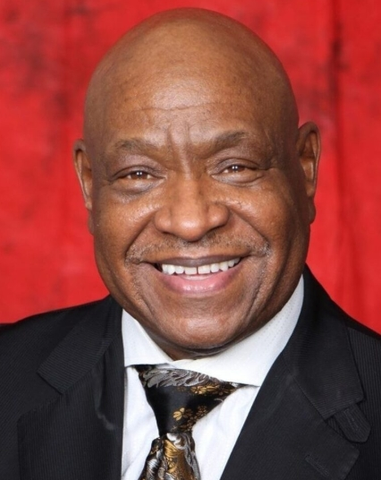

Former State Bishop • In Memoriam
Bishop Kenneth B. Spears
Senior Pastor of First Saint John Cathedral in Fort Worth and former State Bishop of North Texas. A beloved shepherd and bridge‑builder in Southeast Fort Worth, Bishop Spears led the State with wisdom, compassion, and a heart for unity. His legacy lives on in the pastors he mentored and the churches he strengthened.